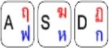
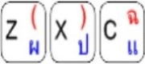
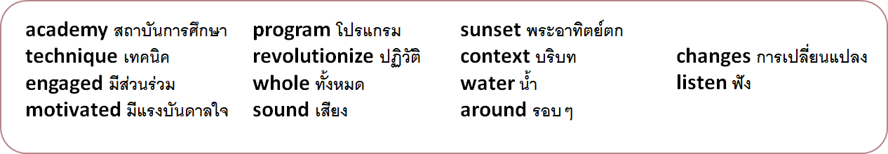

Units
Main
Lesson 1
Lesson 2
Vocabulary
Reviev 1
Listening
About yourself
About family
Speaking
dialogs_con
Created with Sketch.
Present Simple
dialogs_con
Created with Sketch.
Present Continuous
dialogs_con
Created with Sketch.
Past Tenses
Other
Wheel of names
Word Wall
Quick Draw
Start
0
Timer:
30
40
50
60
Unit 4
+1
Points:
0


+1
Points:
0
Show Vocab
Show Quiz

WOW
!There are no more words for you!